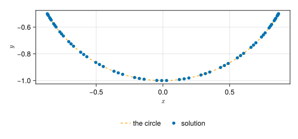

A planar pendulum
A bob of mass $m$ hangs from a rigid rod of length $l$ and swings in a vertical plane, without friction. In Cartesian coordinates $(x, y)$, with velocities $(u, v)$, its Lagrangian with the rod's constraint $x^2 + y^2 = l^2$ added through a multiplier $λ$ is
\[\mathcal{L} = \tfrac12 m\left(u^2 + v^2\right) - m g y + \tfrac12 λ\left(x^2 + y^2 - l^2\right),\]
and the Euler-Lagrange equations give the motion:
\[\begin{aligned} \dot x &= u, & m\,\dot u &= λ x, \\ \dot y &= v, & m\,\dot v &= λ y - m g, \\ x^2 + y^2 &= l^2. \end{aligned}\]
The multiplier is the rod's tension per unit length, negative while the rod pulls. This is the third of Python STREAM's examples of a general calculation, taken there from the scikits.odes documentation. It is the case that shows what mtkcompile does beyond eliminating variables.
The system
The equations go in as written, constraint included:
using ModelingToolkit, OrdinaryDiffEq, Latexifyusing ModelingToolkit: t_nounits as t, D_nounits as D@parameters l = 1.0 m = 1.0 g = 1.0@variables x(t) [state_priority = 10] y(t) u(t) [state_priority = 10] v(t) λ(t)eqs = [ D(x) ~ u, D(y) ~ v, m * D(u) ~ λ * x, m * D(v) ~ λ * y - m * g, x^2 + y^2 ~ l^2,]@named pendulum = System(eqs, t)The index of a constraint
Nothing in the five equations gives $λ$. The constraint holds only positions; differentiate it once and it holds velocities, $x u + y v = 0$; twice, and the accelerations bring in $λ$:
\[u^2 + v^2 + \frac{λ}{m}\left(x^2 + y^2\right) - g y = 0.\]
A third differentiation would give $\dotλ$. A system that needs three differentiations to become a set of ordinary differential equations has index 3. A solver cannot integrate it as written: started on the circle, it drifts off.
Python STREAM's example does the two differentiations by hand, and passes the result as the algebraic equation. It also supplies the initial derivatives, which must agree with the differentiated constraint. mtkcompile does both. It finds which equations to differentiate, and how many times (the Pantelides algorithm), differentiates them symbolically, and then picks which variables stay differential (the dummy derivative method):
sys = mtkcompile(pendulum)latexify(equations(sys); env=:aligned)\[ \begin{aligned} 0 &= l^{2} - \left( x\left( t \right) \right)^{2} - \left( y\left( t \right) \right)^{2} \\ \frac{\mathrm{d} ~ x\left( t \right)}{\mathrm{d}t} &= u\left( t \right) \\ 0 &= - 2 ~ u\left( t \right) ~ x\left( t \right) - 2 ~ y\left( t \right) ~ \mathtt{yˍt}\left( t \right) \\ \frac{\mathrm{d} ~ u\left( t \right)}{\mathrm{d}t} &= \mathtt{uˍt}\left( t \right) \\ 0 &= - 2 ~ \left( u\left( t \right) \right)^{2} - 2 ~ \mathtt{uˍt}\left( t \right) ~ x\left( t \right) - 2 ~ y\left( t \right) ~ \mathtt{yˍtt}\left( t \right) - 2 ~ \left( \mathtt{yˍt}\left( t \right) \right)^{2} \end{aligned} \]
The variables marked ˍt and ˍtt are the dummy derivatives: derivatives that became algebraic variables. The constraint is kept as an equation alongside its two derivatives, so the solution stays on the circle to the solver's tolerance rather than drifting off it. The unknowns:
latexify(unknowns(sys); env=:inline)\[\left[ \begin{array}{c} \mathtt{yˍt}\left( t \right) \\ x\left( t \right) \\ y\left( t \right) \\ u\left( t \right) \\ \lambda\left( t \right) \\ \end{array} \right]\]
and the rest, observed:
latexify(observed(sys); env=:aligned)\[ \begin{aligned} \mathtt{uˍt}\left( t \right) &= \frac{x\left( t \right) ~ \lambda\left( t \right)}{m} \\ \mathtt{vˍt}\left( t \right) &= \frac{ - g ~ m + y\left( t \right) ~ \lambda\left( t \right)}{m} \\ v\left( t \right) &= \mathtt{yˍt}\left( t \right) \\ \mathtt{yˍtt}\left( t \right) &= \mathtt{vˍt}\left( t \right) \end{aligned} \]
Which variable stays differential
Of $x$ and $y$, only one can stay differential: the constraint sets the other. The choice matters here. If $y$ is kept, $x = \pm\sqrt{l^2 - y^2}$, and at the bottom of the swing the two signs meet: the constraint's slope in $x$, $2x$, vanishes, and $x$ cannot be found from $y$. If $x$ is kept, the same happens only where $y = 0$, with the rod horizontal, which a swing smaller than 90° never reaches.
state_priority on $x$ and $u$ asks mtkcompile to keep them, which it did above. Without it, the choice falls on $y$. The same equations, in variables declared without the hint inside a let, so that they do not replace the ones above:
sys_plain = let @variables x(t) y(t) u(t) v(t) λ(t) eqs = [D(x) ~ u, D(y) ~ v, m * D(u) ~ λ * x, m * D(v) ~ λ * y - m * g, x^2 + y^2 ~ l^2] mtkcompile(System(eqs, t; name=:plain))endlatexify(unknowns(sys_plain); env=:inline)\[\left[ \begin{array}{c} \mathtt{xˍt}\left( t \right) \\ y\left( t \right) \\ x\left( t \right) \\ v\left( t \right) \\ \lambda\left( t \right) \\ \end{array} \right]\]
and the solve stops the first time the bob reaches the bottom, a quarter of a period in:
θ0 = π / 3p = sys_plainprob_plain = ODEProblem(p, [p.x => sin(θ0), p.u => 0.0], (0.0, 10.0); guesses=[p.y => -0.5, p.v => 0.0, p.λ => -1.0])stopped = solve(prob_plain, Rodas5P(); verbose=false)(stopped.retcode, stopped.t[end])(SciMLBase.ReturnCode.Unstable, 1.685738863988855)The choice is made once, when the system is compiled. A pendulum swinging over the top would need it to change during the solve, which the dummy derivative method in this form does not do.
Initial state and guesses
The bob starts at rest, 60° from the vertical. Two values fix that: $x_0 = l\sin θ_0$ and $u_0 = 0$. The constraint and its derivatives then fix $y_0$, $v_0$ and $λ_0$, and initialization solves for them. It needs a starting point for each, a guess, which it iterates from:
prob = ODEProblem(sys, [x => sin(θ0), u => 0.0], (0.0, 10.0); guesses=[y => -0.5, v => 0.0, λ => -1.0])sol = solve(prob, Rodas5P(); abstol=1e-10, reltol=1e-10)(y0=sol[y][1], λ0=sol[λ][1])(y0 = -0.5000000000000001, λ0 = -0.5000000000000001)The rod holds the bob against the component of gravity along it, $λ_0 = -m g \cos θ_0 / l = -0.5$, and $y_0 = -l\cos θ_0$. Python STREAM's example starts from a guess of $λ_0 = 0.1$ and its own consistent derivatives, which it has to supply.
The motion
using CairoMakiefig = Figure(size=(600, 280))ax = Axis(fig[1, 1]; xlabel=L"x", ylabel=L"y", aspect=DataAspect())arc = range(-sin(θ0), sin(θ0); length=200)lines!(ax, arc, -sqrt.(1 .- arc .^ 2); linestyle=:dash, color=:orange, label="the circle")samples = range(0, 10; length=60)scatter!(ax, sol(samples; idxs=x).u, sol(samples; idxs=y).u; label="solution")Legend(fig[2, 1], ax; orientation=:horizontal, framevisible=false)fig
Every point sits on the circle:
@assert maximum(abs, sol[x] .^ 2 .+ sol[y] .^ 2 .- 1) < 1e-8maximum(abs, sol[x] .^ 2 .+ sol[y] .^ 2 .- 1)1.8562928971732617e-13A pendulum released from $θ_0$ swings with period
\[T = 4\sqrt{l/g}\;K\!\left(\sin\tfrac{θ_0}{2}\right),\]
where $K(k) = \int_0^{π/2} d\varphi / \sqrt{1 - k^2 \sin^2 \varphi}$ is the complete elliptic integral of the first kind, longer than the small-swing $2π\sqrt{l/g}$ by 7% at 60°. $K$ is the arithmetic-geometric mean's: $K(k) = π / (2\,\mathrm{agm}(1, \sqrt{1 - k^2}))$. The bob crosses the bottom going left once per period, so the gap between two such crossings is $T$:
agm(a, b) = abs(a - b) < 1e-15 ? a : agm((a + b) / 2, sqrt(a * b))T_exact = 4 * π / (2 * agm(1.0, sqrt(1 - sin(θ0 / 2)^2)))τ = range(0, 10; length=100_001)xs = sol(τ; idxs=x).ucrossings = [τ[k] for k in 2:length(τ) if xs[k-1] > 0 && xs[k] <= 0]@assert length(crossings) == 2 && isapprox(diff(crossings)[1], T_exact; rtol=1e-4)(computed=diff(crossings)[1], exact=T_exact)(computed = 6.743, exact = 6.743001419250384)